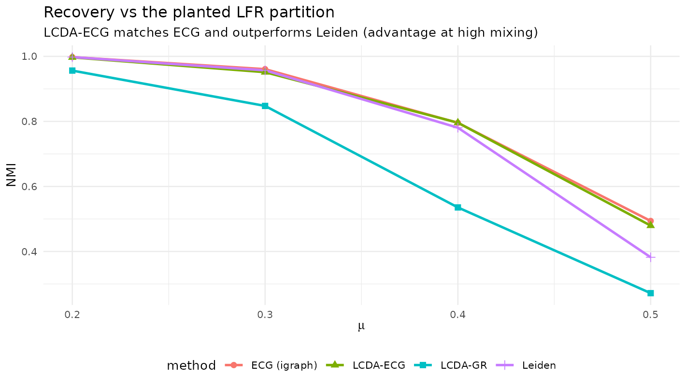
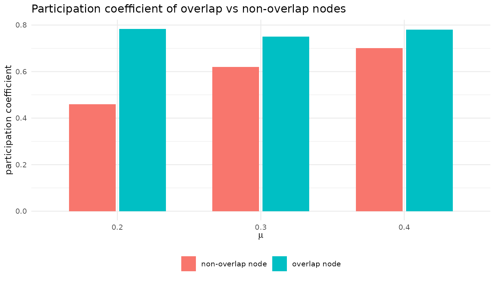
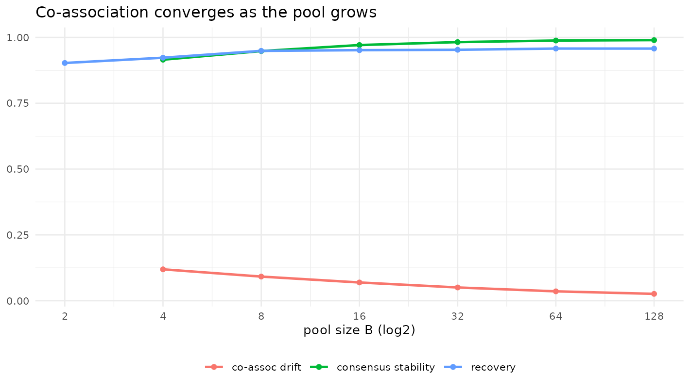

Ensemble consensus over the GRASP pool (LCDA-ECG)
Source:vignettes/ensemble-consensus.Rmd
ensemble-consensus.RmdWhy throw the pool away?
A multi-start search produces a whole pool of
diverse partitions, yet the GRASP/Reactive variants keep only the single
best-by-
solution. Following Ensemble Clustering for Graphs (Poulin &
Théberge, 2019), lcda_ecg() instead aggregates the pool:
the fraction of pool partitions in which two endpoints share a community
becomes an edge co-association weight, and the
reweighted graph is re-clustered for a consensus
partition. Three by-products come for free: a consensus leader,
a node-confidence map, and overlapping communities.
g <- igraph::make_graph("Zachary")
res <- lcda_ecg(g, B = 32, overlap = TRUE, tau = 0.6, seed = 1)
res
#>
#> ── LCDA-ECG (ensemble consensus) result ────────────────────────────────────────
#> communities: 4
#> modularity Q (input): 0.41979
#> Q (consensus weights): 0.588951
#> pool size B: 32
#> mean node confidence: 0.83
#> overlap nodes: 6 (tau = 0.6)
cat("consensus leaders:", res$leaders, "\n")
#> consensus leaders: 1 6 34 25
cat("overlap (bridge) nodes:", which(res$is_overlap), "\n")
#> overlap (bridge) nodes: 1 5 6 7 10 11Consensus closes the recovery gap
library(ggplot2); library(dplyr)
#>
#> Attaching package: 'dplyr'
#> The following objects are masked from 'package:stats':
#>
#> filter, lag
#> The following objects are masked from 'package:base':
#>
#> intersect, setdiff, setequal, union
rec$results$summary |>
ggplot(aes(mu, NMI, colour = method, shape = method)) +
geom_line(linewidth = 0.9) + geom_point(size = 2) +
labs(title = "Recovery vs the planted LFR partition",
subtitle = "LCDA-ECG matches ECG and outperforms Leiden (advantage at high mixing)",
x = expression(mu), y = "NMI") +
theme_minimal(base_size = 10) + theme(legend.position = "bottom")
The fixed/Reactive variants trail Leiden and ECG on recovery; the ensemble-consensus variant LCDA-ECG matches ECG and overtakes Leiden in the high-mixing regime, where consensus is most valuable. (It stays on par with ECG rather than beating it.)
Overlapping nodes show bridge-like connectivity
ov$results$per_graph |>
group_by(mu) |>
summarise(`overlap node` = mean(P_overlap, na.rm = TRUE),
`non-overlap node` = mean(P_nonoverlap, na.rm = TRUE), .groups = "drop") |>
tidyr::pivot_longer(-mu, names_to = "kind", values_to = "P") |>
ggplot(aes(factor(mu), P, fill = kind)) +
geom_col(position = position_dodge(0.7), width = 0.65) +
labs(title = "Participation coefficient of overlap vs non-overlap nodes",
x = expression(mu), y = "participation coefficient", fill = NULL) +
theme_minimal(base_size = 10) + theme(legend.position = "bottom")
Nodes that LCDA-ECG places in more than one community have a significantly higher participation coefficient (their edges spread across communities), i.e. bridge-like connectivity. Because both the participation coefficient and the overlap-assignment rule read the same node-to-community edge distribution, this is a consistency check rather than an independent validation.
The pool stabilises (so the pool size is principled)
st$results |>
group_by(B) |>
summarise(`co-assoc drift` = mean(coassoc_drift, na.rm = TRUE),
`consensus stability` = mean(consensus_stability, na.rm = TRUE),
`recovery` = mean(recovery), .groups = "drop") |>
tidyr::pivot_longer(-B, names_to = "metric", values_to = "value") |>
ggplot(aes(B, value, colour = metric)) +
geom_line(linewidth = 0.9) + geom_point(size = 1.5) +
scale_x_continuous(trans = "log2", breaks = c(2, 4, 8, 16, 32, 64, 128)) +
labs(title = "Co-association converges as the pool grows",
x = "pool size B (log2)", y = NULL, colour = NULL) +
theme_minimal(base_size = 10) + theme(legend.position = "bottom")
#> Warning: Removed 2 rows containing missing values or values outside the scale range
#> (`geom_line()`).
#> Warning: Removed 2 rows containing missing values or values outside the scale range
#> (`geom_point()`).
As grows the co-association drift vanishes and both the consensus partition and its recovery plateau by — a stability-based stopping rule, consistent with the asymptotic concentration of the Reactive update.
References
- Poulin, V., & Théberge, F. (2019). Ensemble clustering for graphs. Applied Network Science, 4, 51. doi:10.1007/s41109-019-0162-z